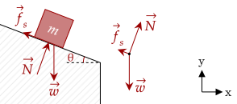
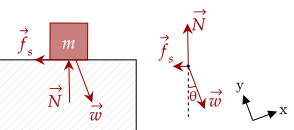
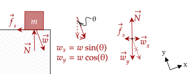
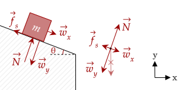
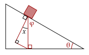
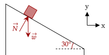
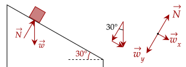
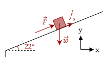
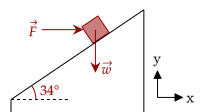

Previously, we learned how to deal with forces at an angle. Now, we deal with surfaces at an angle.
Generally, these are called inclined planes.

From the figure, we can see that the box has three forces acting on it; the weight, the normal force, and the static friction. Further, you can see that the normal force points perpendicular to the surface of contact.
Here is a technique one can do. Usually, we set the coordinate system such that the x-component is completely horizontal and the y-component as completely vertical. However, this time, it might be better to "tilt" our coordinate system to be parallel to the incline. This is the same as "tilting" your view, like in the figure below.

With this, we now have a flat surface and forces at an angle; what we've done before. We decompose force into its tilted x-component and y-component.

You may wonder where the angle for the tilted degree system came from. To find out, we must use our knowledge of geometry and angle-chasing. It is left as a problem below.
Now that we've resolved this weight, we can do our equations again. Another thing we can do is tilt our coordinate system again back to the original to see each of the forces in the original, inclined plane form.


Since the interior angles of a triangle add up to 180°, we can solve for the value of φ.
Now, there is a linear pair on the top. There are three angles that make it up; a 90° angle, perpendicular to the surface, the angle , and the angle φ. These add up toe 180°.
We already have a value of φ. Substituting, we show what is needed.
The above problem shows another problem that you may face. Be careful with which sides have what angles. Since the trigonometric equations (specifically here sine and cosine) specify which side is the opposite and adjacent side, you should take note of this and use the right trigonometric equation.
Here is then our strategy for dealing with these problems; first, we tilt our coordinate system to be parallel to the incline, then deal with everything else as if they were forces at an angle.

Tilting the coordinate system, we see that the horizontal weight corresponds to the acceleration of the box along the inclined plane, and the vertical weight pushes on the surface, causing the normal force.

We deal with the acceleration first. Seeing as the plane is frictionless, this means the only horizontal force is the weight, and thus this is the net force.
We use sine here as horizontal weight is opposite to the 30° angle (see problem above). Thus, solving for acceleration, we get that it is 4.9m/s².
For the normal force, we note that the two vertical forces contributing to the vertical net force is the normal force itself and the vertical weight. We set the net vertical force as zero.
Thus, we get that the magnitude of the normal force is approximately 42N.
There are two horizontal forces acting in the tilted coordinate system; the force being applied, and the horizontal weight, which we set as negative as it pulls the crate down. Solving, we have the following.
Substituting in our values, we have that the force has to be 690N.
Of course, inclined planes usually have friction as well. Since friction points perpendicular to the normal force, it points parallel to the surface; thus, there usually isn't any need to decompose friction.

Before dealing with the horizontal forces, let's deal with the vertical forces, which balance out. Thus, the net vertical force, consisting of the normal force and the vertical weight, looks like this.
Now, the horizontal net force is built out of three forces; the horizontal weight, which we set as negative, the parallel force, and the friction.
Here, we must be wary of the friction; this time, we set the friction as positive. We note that the weight attempts to pull the block down the plane, while friction attempts to keep it up. Thus, here, it is a helping force.
Plugging in our values gives us a strength needed of approximately 11N.
Here, the friction is now an opposing force; it attempts to keep the block from moving up. Thus, now we set it as negative. We use the same procedures as last time.
Plugging in our values gives us a strength needed of approximately 47N.
We note two forces which cause acceleration; the kinetic friction, and the weight of the object. Here, it is best to set the weight as positive and the kinetic friction as negative as this force attempts to stop the object from going down the plane.
Thus, we can write out this equation. Another thing to note is that the normal force has the same magnitude as the vertical weight, so we substitute that in as well.
We now simplify.
As of now, the only "angled" force we noted in our equations is the weight. However, other forces also occur that can be perpendicular to our coordinate system or even be angled. In these scenarios, you should try to imagine what they look like.
One trick you can try is to "imagine" the original inclined plane and rotate or flip it into position. Of course, this trick works much better when you practice a lot!


To keep the box moving at constant speed, the horizontal forces (in the titled reference plane) have to cancel out to zero. The only net forces in the horizontal direction is the horizontal weight and the horizontal component of the force.
Looking at the figure, we see that the horizontal force is adjacent to the angle, so we use cosine.
Substituting the values, we get the magnitude of the force.
The horizontal force exerts a vertical and horizontal component in our tilted coordinate system. The vertical component adds on to the normal force, so we compute that first. The vertical component is opposite to the angle, so we use sine.
There are three forces acting on the horizontal direction, with the horizontal weight and the kinetic friction both opposing the acceleration.
Noting the normal force is the same as the vertical weight, we make the equation for the net horizontal force.
Substituting the values, we get the acceleration, which is about −3.2m/s².
The normal force on an inclined plane is based on the angle of the incline; this usually causes it to be less than if the surface was completely level.
To end this flyby of the inclined plane, let's try some problems which require the use of kinematics. The kinematics part is usually just some algebraic manipulation and plugging, like the dessert after the main course.
We don't know the mass, so let's set it as . Then, the net horizontal force is the horizontal weight and the kinetic friction.
Now, let's subtitute this value into our kinematic equations. Noting the initial velocity at rest, we solve for the coefficient of kinetic friction.
We now have a convoluted equation for the coefficient of kinetic friction. Let's first compute for the 61s case.
Now, for the 42s case. This should be lower than the first scenario.
Given that the block slides down at constant velocity, that means that they have the same magnitude.
As the block is projected up, the net horizontal force is made up of the horizontal weight and the kinetic friction; both pointing downwards. The kinetic friction attempts to stop the movement going up.
We set both values then as negative.
How do we then use this equation? We use our time-independent equation, noting the initial velocity and the final velocity as zero.
This is our answer. For the second question; no, as once it ends at rest, the kinetic friction and horizontal weight will balance out, causing no acceleration, and thus no movement (since the object is now at rest).